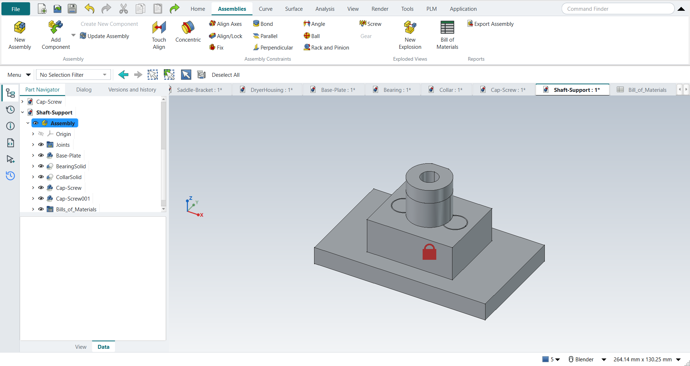

Tutorial G: Shaft Support assembly
| Book |
Shih, Parametric Modeling with Siemens NX, ch. 14 |
| You learn |
Assembly template, Add Component, Touch Align, Align Axes, Parallel, Align/Lock, degrees of freedom, parts list |
| Sizes |
The four parts' sizes are in figures only; the parts here are metric ones of this project’s own, built to fit the book’s constraint sequence. |

In short
-
Application › Assemblies, Ctrl+N: the document starts with an empty Assembly.
-
Add Component: the Base-Plate, Yes to grounding it.
-
The Bearing: Touch Align on its bottom face, Align Axes on both holes. After the first axis it can still turn; after the second it cannot.
-
The Collar: Touch Align, Align Axes, Parallel.
-
Two Cap-Screws: Align/Lock on the hole axis, Touch Align on the counterbore’s seat.
-
A change to the Bearing reaches the assembly; Reports › Bill of Materials lists the parts.
Step by step
| # | In the book (NX) | In FreeCAD NX-Style | Result | Notes |
|---|---|---|---|---|
G1 |
Create the parts Collar, Bearing, Base-Plate, Cap-Screw and save them |
modelled by script (the book’s sizes are figure-only; earlier tutorials cover modelling) |
same |
Base-Plate 58995 mm^3, Bearing 41202 mm^3, Collar 2939 mm^3, Cap-Screw 1999 mm^3 |
G2 |
File > New, Assembly template, name Shaft-Support |
ribbon 'Application › Design > Assemblies', Ctrl+N; saved as Shaft-Support |
differs |
NXStyle’s Assembly template starts the document with an empty Assembly (like NX’s); NX names the file in the New dialog, FreeCAD on the first save |
G3 |
Add Component: Base-Plate at the origin; Yes to the Fixed constraint |
ribbon 'Assemblies › Assembly > Add Component', click Base-Plate in the list, Yes, MB2 = OK |
same |
grounded True; FreeCAD asks 'Ground Part?' like NX’s question about the Fixed constraint |
G4 |
Add Component: Bearing, placed with Move |
ribbon 'Assemblies › Assembly > Add Component', click Bearing, MB2 |
differs |
FreeCAD places it beside the last part; NX lets you drag it to a spot first |
G5 |
Touch Align: Bearing bottom face to the Base-Plate top face |
ribbon 'Assemblies › Assembly Constraints > Touch Align', Face5 + Face3, MB2 = OK |
same |
joint Distance; Bearing now from z = 0.000 mm |
G6 |
Touch Align: the right hole axes (Bearing counterbore hole, Base-Plate hole) |
ribbon 'Assemblies › Assembly Constraints > Align Axes', Face12 + Face8, MB2 = OK |
same |
hole axes coincide True; rotated 25° about that axis and solved: it stays (still free to rotate, as the book says). NX’s Show Degrees of Freedom has no FreeCAD equivalent: the replay moves the part and solves |
G7 |
Touch Align: the left hole axes; Move: it cannot move |
ribbon 'Assemblies › Assembly Constraints > Align Axes', Face10 + Face7, MB2 = OK |
same |
rotated 25° and solved: back in place True (fully constrained, as in the book) |
G8 |
Add Component: Collar, Constrain, Touch Align on the boss’s top face |
ribbon 'Assemblies › Assembly > Add Component' + 'Assemblies › Assembly Constraints > Touch Align', Face2 + Face15 |
same |
Collar from z = 35.000 mm |
G9 |
Touch Align: the outer cylinders of Collar and Bearing |
ribbon 'Assemblies › Assembly Constraints > Align Axes', Face1 + Face7 |
same |
centred True; still free to rotate True |
G10 |
Parallel: Collar to the Base-Plate front face |
ribbon 'Assemblies › Assembly Constraints > Parallel', Face3 (the collar’s flat) + Face2 |
limit |
joint made, solver 'converged', but the collar did not turn (flat normal Vector (1.0, 0.0, -0.0)). FreeCAD 1.1.4’s solver drops a Parallel constraint whose faces start exactly perpendicular ('ParallelAxesJoint … constraint(s) removed: RedundantConstraintDirectionCosineConstraintIzJy'); reproduced without NXStyle; the same joint works when the faces start 20° apart. The book uses the Collar’s datum plane (Replace Reference Set > Entire Part); here the flat on the collar stands in |
G11 |
Workaround: delete the joint, turn the Collar 20°, Parallel again |
joint selected + Delete (gone), Collar turned, ribbon 'Assemblies › Assembly Constraints > Parallel' |
differs |
flat normal now (-0.000, 1.000, 0.000); rotated 30° and solved: back True. NX drags the part with Move Component; here it is turned by its placement |
G12 |
Add Component: Cap-Screw, Align/Lock on the right hole axis |
ribbon 'Assemblies › Assembly > Add Component' + 'Assemblies › Assembly Constraints > Align/Lock', Face4 + Face12 |
same |
on the axis True; slides along it True; turns False (the book: one DOF, along the axis) |
G13 |
Touch Align: the head on the counterbore’s seat |
'Assemblies › Assembly Constraints > Touch Align', Face2 + Face16 |
same |
head underside at z = 15.000 mm; moved 7 mm and solved: back True |
G14 |
Add Component: Cap-Screw, Align/Lock on the left hole axis |
ribbon 'Assemblies › Assembly > Add Component' + 'Assemblies › Assembly Constraints > Align/Lock', Face4 + Face10 |
same |
on the axis True; slides along it True; turns False (the book: one DOF, along the axis) |
G15 |
Touch Align: the head on the counterbore’s seat |
'Assemblies › Assembly Constraints > Touch Align', Face2 + Face16 |
same |
head underside at z = 15.000 mm; moved 7 mm and solved: back True |
G16 |
Exploded view: New Explosion, Collar 1.5 in and a Cap-Screw 2.0 in up; Auto-explode |
- |
skipped |
FreeCAD 1.1’s New Explosion moves parts only by dragging a 3D handle (no distance field like NX’s); the replay does not drag 3D handles |
G17 |
Edit the Bearing: hole Ø0.25 in (6.35 mm), save; the assembly updates |
Bearing document: the bore’s Radius in its properties, recompute, save |
differs |
cylinder radii in the assembly’s Bearing [3.175, 4.0, 6.5, 12.0]; NX: Open in Window, double-click the hole, edit the sketch value. The replay’s parts are scripted, so the value is a property here |
G18 |
Parts List |
ribbon 'Assemblies › Reports > Bill of Materials', MB2 = OK |
differs |
spreadsheet rows 5; Cap-Screw row ['4', 'Cap-Screw', '', '2', '', 'quantity 2']; NX puts the parts list on the drawing, FreeCAD makes a spreadsheet (a drawing can show it as a Tabular Note) |
G19 |
The assembly is shown in the graphics window |
render of the graphics window |
same |
20.0% of the view shows the part |
| Result | Means |
|---|---|
same |
The book’s NX steps work as written. |
differs |
It works, but the FreeCAD way is different; the notes say how. |
limit |
The book’s way fails in FreeCAD itself; a workaround follows in the next steps. |
missing |
FreeCAD has no such function; a stand-in follows. |
skipped |
Not replayed; the notes give the reason. |
FAILED |
Did not work. |
What differs from NX
-
There is no Show Degrees of Freedom: the replay moves a part, solves, and checks whether it stays or snaps back.
-
A Parallel joint between faces that start exactly perpendicular is dropped by FreeCAD 1.1.4’s solver; delete it, turn the part a little, apply it again (G11).
-
New Explosion moves parts only by dragging a 3D handle, so G16 is skipped.
-
The parts list is a spreadsheet rather than a table on the drawing.